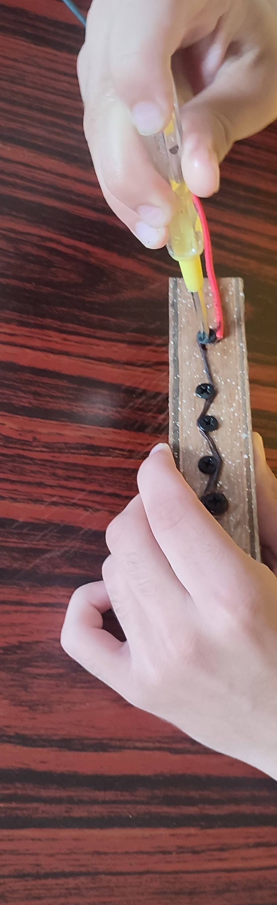
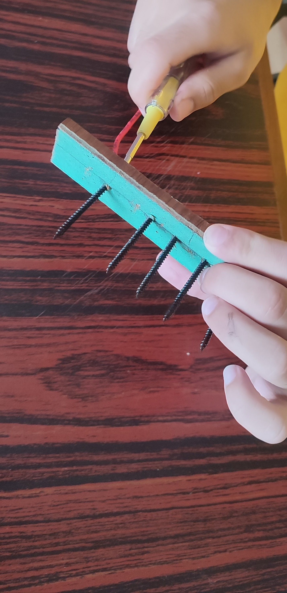
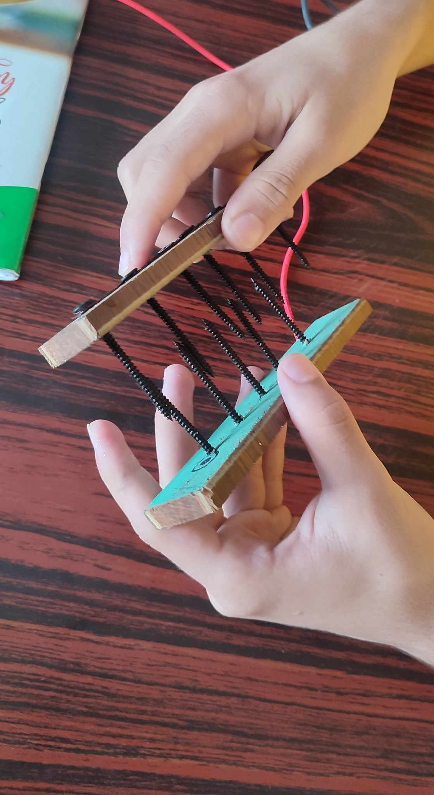
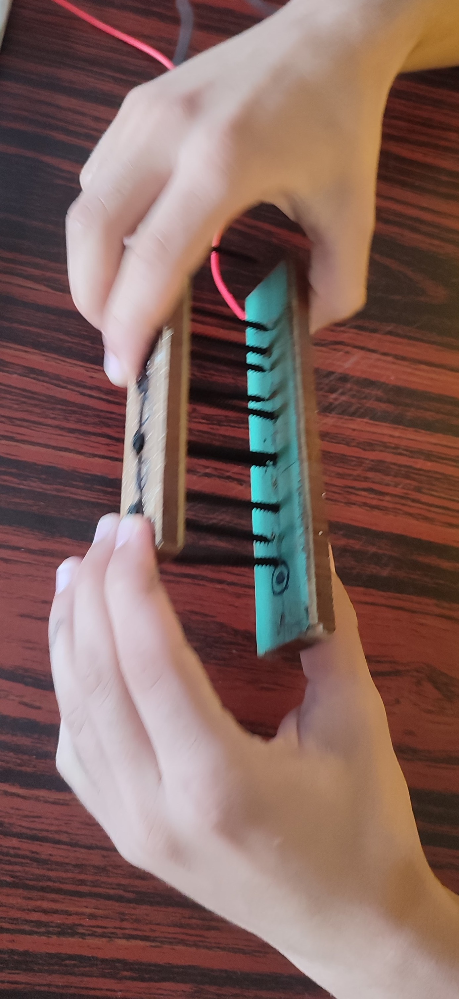
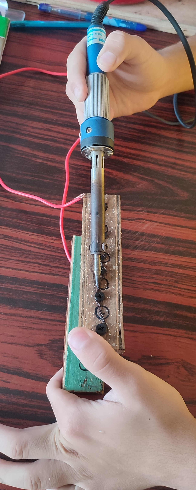

•Material Required:-
•Wodden stick
•Screw
•Wires
•Drill or Screw driver
•Multimeter(To check the flow of current)
•Ionic compound
•Dc Battery or a/c to d/c convertor (if you want directly to join in socket)
Let's go towards the making Process:-

To make the generator take the wodeen stick and cut it in equal part and point the mark where the screw should be fitted and be careful that the screw should not touch to each other(if it touches the attraction between the electrode and the ions strips off the water shell and a charge transfer, a current, occurs).Then,take the drill or the screw driver and insert the screw in the pointed mark.


After inserting screw in one wodden stick give connection to five screw from red wire which is positive and in Another stick give connection of six screw from black wire which is negative.Then take solding iron and heat it after heating it take the solding iron metal and put it into the wire and fixed it. After completing the both positive and negative side.Then take the wooden stick and join it's as shown as below.Be careful !that the positive and the negative sides will not touch to each orther.


Now after join the two sticks then you have to take a cointainer which is called as a electctrolytic jar for the project. And then put any ionic compoud i.e-NaCl,NAOH or KOH etc.Inorder to make water electolyte .Then,finally join the wire connection to the dc battery or connect with a/c to d/c convertor.And imeditaely joining it you can see the bubbles in the water or in the screw side which is h2 gas.